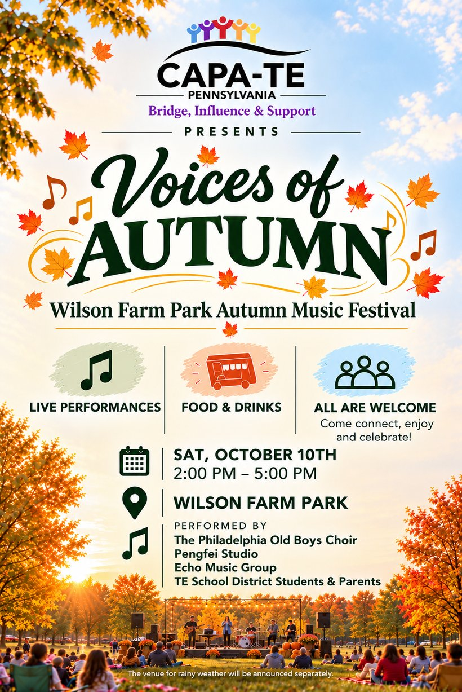
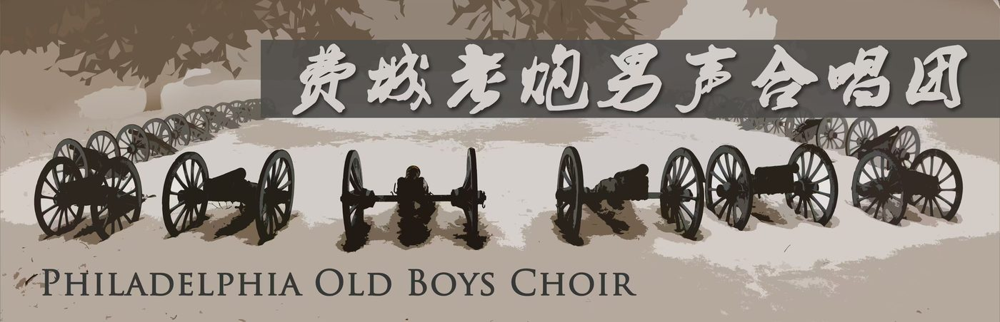
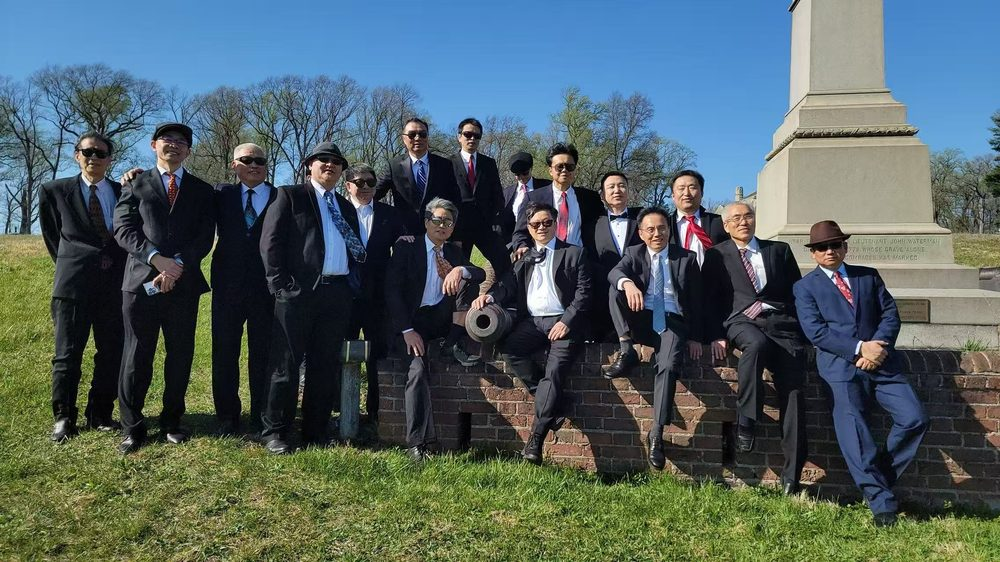
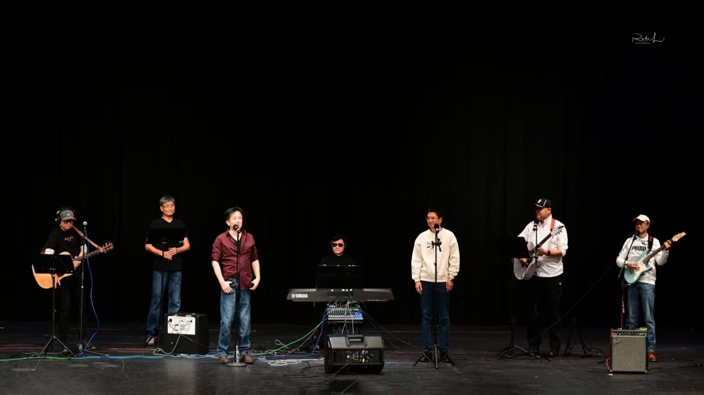
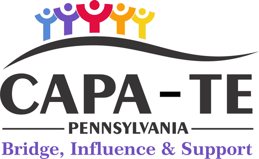

- DateSaturday, Oct 10
- Time2:00 – 5:00 pm
- PlaceWilson Farm Park
- EntryFree
Come sing, clap, and stay a while.
Voices of Autumn brings neighbors together at the park for an afternoon of live music. Bring a blanket, bring the kids, bring your friends. Everyone is welcome.
The bands performing are Asian artists, and the afternoon is open to every community. No tickets and no sign-up needed.
Live performances
The Philadelphia Old Boys Choir, Pengfei Studio, Echo Music Group, and TE School District students and parents.
Food & drinks
Food and drinks for sale, plus games, activities, and raffles.
All are welcome
Free entry and all ages. Come connect, enjoy, and celebrate!

Schedule
The program runs in two halves with an intermission. Exact times will be announced.
Download the full program PDF · 15 pages · 6 MB

Meet the Philadelphia Old Boys Choir
The Philadelphia Old Boys Choir was founded in 2017 by music lovers living in the suburbs of Philadelphia. What began as a gathering of friends has grown into an amateur men’s a cappella choir, led by President Ping Jiang and Conductor Xiaoming Yu.
Their music videos include “Shaolin, Shaolin: A Philadelphia Legend,” “Waiting for You Till Dawn,” “By the Water’s Side,” “Wild Goose: Reflections on the Bauhinia,” “Fill the Cup,” “Ah, Friend, Farewell!,” “Father’s Grassland, Mother’s River: A Song for Home,” “Clouds and Roads of Home,” “The Crescent Moon,” “You, My Desk Mate,” “Moni Mountain,” “Legend,” and “Hulunbuir Grassland.”
Their performance of “You, My Desk Mate” won first place in the choir category at the 2023 North American Chinese Song Awards in New York. Their videos have reached wide audiences in Chinese communities across the U.S. and on online media in China.


TE student performers
The afternoon opens with performances by students from the Tredyffrin-Easttown School District.
Choir, bands, and crew
Visit Wilson Farm Park
Saturday, October 10, 2026, 2:00 – 5:00 pm
- 500 Lee Road, Wayne, PA 19087
- Parking is available in the Wilson Farm Park parking lot.
- Performances take place at the Central Stage.
On the day
- Food and drinks will be for sale.
- Games and activities for all ages.
- Bring a blanket or lawn chair.

Presented with
CAPA-TE is a non-profit organization that is non-religious, non-political, non-commercial, non-sectarian, and non-partisan. Its mission is to support educational excellence for K–12 students in the Tredyffrin-Easttown (TE) School District, and to help members stay informed about, involved in, and empowered on public school and community matters.
Above all, CAPA-TE gives the Asian community in our district a voice and a vision.